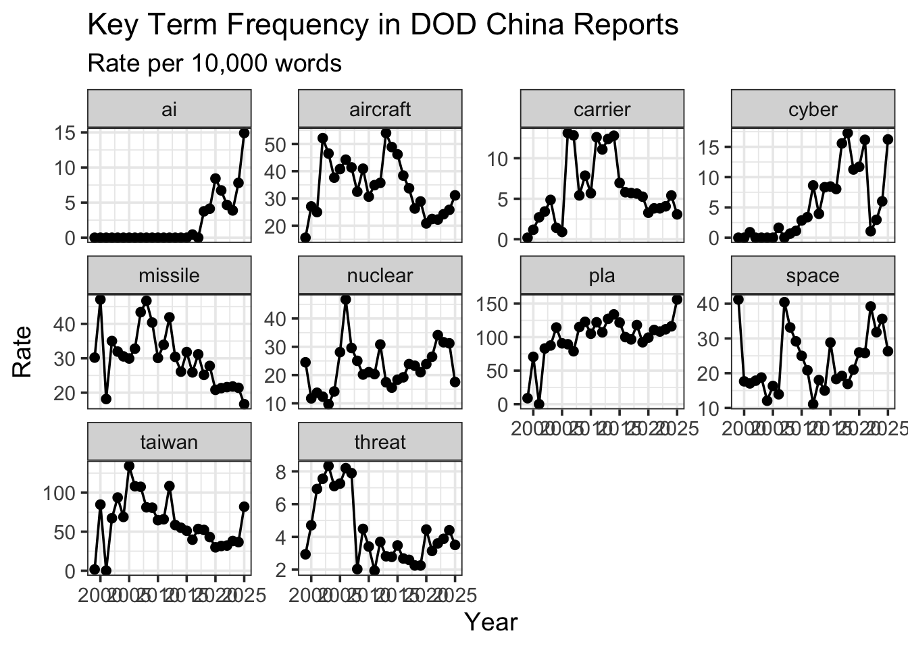
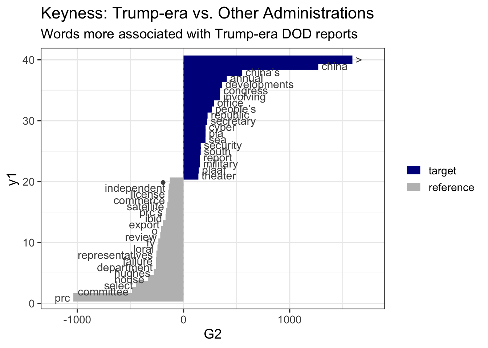
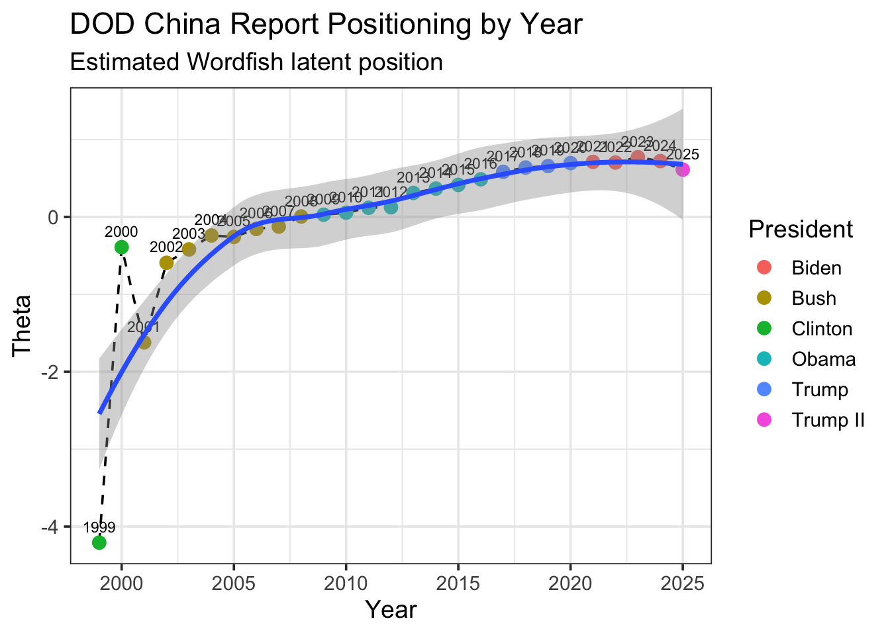
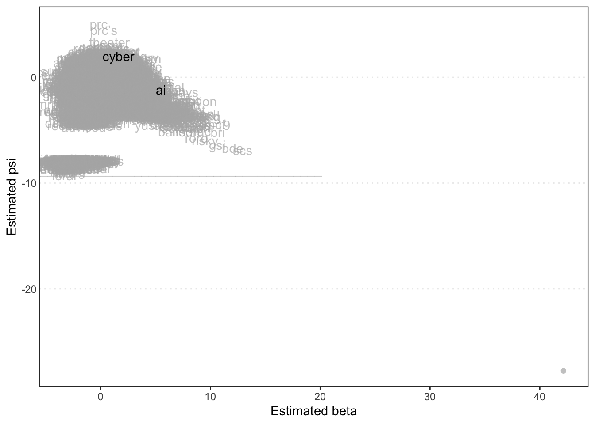

packageneeded <- c(
"pdftools",
"tidyverse",
"quanteda",
"quanteda.textstats",
"quanteda.textplots",
"quanteda.textmodels"
)
new_packages <- packageneeded[
!packageneeded %in% installed.packages()[, "Package"]
]
if (length(new_packages)) {
install.packages(new_packages, dependencies = TRUE)
}
library(pdftools)
library(tidyverse)
library(quanteda)
library(quanteda.textstats)
library(quanteda.textplots)
library(quanteda.textmodels)
############################################################
## 1. Data Ingestion
## Question: What DOD reports are we analyzing?
############################################################
PATH_DATA <- "/Users/patrickheldebrandt/Desktop/EPPS6323/USDOD"
pdf_files <- list.files(
PATH_DATA,
pattern = "\\.pdf$",
full.names = TRUE,
ignore.case = TRUE
)
cat("Found", length(pdf_files), "PDF files\n")Found 27 PDF files############################################################
## 2. Read PDFs
## Question: How do we convert DOD PDFs into text?
############################################################
read_pdf_safe <- function(filepath) {
tryCatch({
pages <- pdftools::pdf_text(filepath)
text <- paste(pages, collapse = "\n")
return(text)
}, error = function(e) {
warning("Failed to read: ", basename(filepath))
return(NA_character_)
})
}
DODq <- tibble(
doc_id = basename(pdf_files),
text = map_chr(pdf_files, read_pdf_safe)
)
DODq <- DODq %>%
filter(!is.na(text))
DODq$year <- as.numeric(str_extract(DODq$doc_id, "\\d{4}"))
DODq$doc_id <- paste0("USDOD_", DODq$year, ".pdf")
DODq <- arrange(DODq, year)
cat("Successfully loaded", nrow(DODq), "reports\n")Successfully loaded 27 reports############################################################
## 3. Corpus Construction
## Question: How do we create a quanteda corpus?
############################################################
corp_DOD <- corpus(DODq, text_field = "text")
corp_DOD$year <- DODq$year
############################################################
## 4. Add Metadata
## Question: How can reports be compared by administration?
############################################################
corp_DOD$president <- case_when(
corp_DOD$year <= 2000 ~ "Clinton",
corp_DOD$year >= 2001 & corp_DOD$year <= 2008 ~ "Bush",
corp_DOD$year >= 2009 & corp_DOD$year <= 2016 ~ "Obama",
corp_DOD$year >= 2017 & corp_DOD$year <= 2020 ~ "Trump",
corp_DOD$year >= 2021 & corp_DOD$year <= 2024 ~ "Biden",
corp_DOD$year >= 2025 ~ "Trump II",
TRUE ~ NA_character_
)
summary(corp_DOD, 5)Corpus consisting of 27 documents, showing 5 documents:
Text Types Tokens Sentences year president
USDOD_1999.pdf 16068 301499 10250 1999 Clinton
USDOD_2000.pdf 2990 15078 540 2000 Clinton
USDOD_2001.pdf 14864 186149 6246 2001 Bush
USDOD_2002.pdf 4178 25908 1051 2002 Bush
USDOD_2003.pdf 4068 25848 957 2003 Bushtable(corp_DOD$president)
Biden Bush Clinton Obama Trump Trump II
4 8 2 8 4 1 ############################################################
## 5. Tokenization and DFM
## Question: How do we prepare reports for text analysis?
############################################################
toks_DOD <- tokens(
corp_DOD,
remove_punct = TRUE,
remove_numbers = TRUE
) %>%
tokens_remove(stopwords("english")) %>%
tokens_remove(c(
"page", "figure", "table", "appendix", "chapter",
"https", "www", "pdf", "gov"
))
dfmat_DOD <- dfm(toks_DOD)
cat("DFM dimensions:", dim(dfmat_DOD), "\n")DFM dimensions: 27 27464 cat("Documents:", ndoc(dfmat_DOD), "| Features:", nfeat(dfmat_DOD), "\n")Documents: 27 | Features: 27464 ############################################################
## 6. Top Features
## Question: What words appear most often in the DOD reports?
############################################################
topfeat <- topfeatures(dfmat_DOD, 30)
print(topfeat) china military defense prc pla china’s
11166 10532 7399 7164 6456 6090
security u.s force operations forces national
5370 4336 3972 3750 3457 3454
states taiwan also united report prc’s
3246 3168 3130 3073 2970 2878
air capabilities people’s support systems technology
2833 2828 2787 2726 2655 2585
development information republic department new developments
2486 2472 2449 2374 2360 2349 data.frame(
feature = names(topfeat),
freq = topfeat
) %>%
ggplot(aes(x = reorder(feature, freq), y = freq)) +
geom_col() +
coord_flip() +
labs(
title = "Top 30 Features across DOD China Reports",
x = NULL,
y = "Frequency"
) +
theme_bw(base_size = 14)
############################################################
## 7. Word Cloud
## Question: What vocabulary dominates the DOD reports visually?
############################################################
textplot_wordcloud(
dfmat_DOD,
max_words = 100
)############################################################
## 8. Key Term Trends Over Time
## Question: How do major defense terms change over time?
############################################################
dfmat_year <- dfm_group(
dfmat_DOD,
groups = corp_DOD$year
)
key_terms <- c(
"taiwan", "pla", "nuclear", "cyber", "missile",
"threat", "aircraft", "carrier", "space", "ai"
)
term_trends <- convert(dfmat_year, to = "data.frame") %>%
select(doc_id, any_of(key_terms)) %>%
mutate(year = as.numeric(str_extract(doc_id, "\\d{4}"))) %>%
pivot_longer(
cols = -c(doc_id, year),
names_to = "term",
values_to = "count"
)
doc_lengths <- ntoken(dfmat_year)
term_trends <- term_trends %>%
left_join(
tibble(doc_id = names(doc_lengths), total = doc_lengths),
by = "doc_id"
) %>%
mutate(rate = count / total * 10000)
ggplot(term_trends, aes(x = year, y = rate)) +
geom_line() +
geom_point() +
facet_wrap(~term, scales = "free_y") +
labs(
title = "Key Term Frequency in DOD China Reports",
subtitle = "Rate per 10,000 words",
x = "Year",
y = "Rate"
) +
theme_bw(base_size = 14)
############################################################
## 9. Keyness by Administration
## Question: Which words distinguish Trump-era reports?
############################################################
tstat_key <- textstat_keyness(
dfmat_DOD,
target = corp_DOD$president %in% c("Trump", "Trump II"),
measure = "lr"
)
textplot_keyness(tstat_key, n = 20) +
labs(
title = "Keyness: Trump-era vs. Other Administrations",
subtitle = "Words more associated with Trump-era DOD reports"
) +
theme_bw(base_size = 14)
############################################################
## 10. Wordfish Scaling
## Question: How can we compare DOD report positions?
############################################################
dfmat_wf <- dfm_trim(
dfmat_DOD,
min_termfreq = 10,
max_docfreq = 0.95,
docfreq_type = "prop"
)
anchor_early <- which(docnames(dfmat_wf) == "USDOD_2000.pdf")
anchor_late <- which(docnames(dfmat_wf) == "USDOD_2023.pdf")
cat(
"Anchor documents:",
docnames(dfmat_wf)[anchor_early],
"and",
docnames(dfmat_wf)[anchor_late],
"\n"
)Anchor documents: USDOD_2000.pdf and USDOD_2023.pdf tmod_wf <- textmodel_wordfish(
dfmat_wf,
dir = c(anchor_early, anchor_late)
)
summary(tmod_wf)
Call:
textmodel_wordfish.dfm(x = dfmat_wf, dir = c(anchor_early, anchor_late))
Estimated Document Positions:
theta se
USDOD_1999.pdf -4.207579 0.004153
USDOD_2000.pdf -0.390109 0.044274
USDOD_2001.pdf -1.620733 0.012955
USDOD_2002.pdf -0.592094 0.034528
USDOD_2003.pdf -0.419106 0.033182
USDOD_2004.pdf -0.239420 0.032228
USDOD_2005.pdf -0.258032 0.036257
USDOD_2006.pdf -0.154441 0.032661
USDOD_2007.pdf -0.124366 0.034982
USDOD_2008.pdf 0.005865 0.025718
USDOD_2009.pdf 0.029312 0.023078
USDOD_2010.pdf 0.054783 0.022772
USDOD_2011.pdf 0.118324 0.019899
USDOD_2012.pdf 0.125258 0.032039
USDOD_2013.pdf 0.310552 0.017453
USDOD_2014.pdf 0.366289 0.015955
USDOD_2015.pdf 0.414386 0.013757
USDOD_2016.pdf 0.486459 0.011619
USDOD_2017.pdf 0.583253 0.009978
USDOD_2018.pdf 0.638375 0.007349
USDOD_2019.pdf 0.657554 0.006869
USDOD_2020.pdf 0.695409 0.004273
USDOD_2021.pdf 0.711545 0.003524
USDOD_2022.pdf 0.703083 0.003745
USDOD_2023.pdf 0.772088 0.001359
USDOD_2024.pdf 0.721437 0.002933
USDOD_2025.pdf 0.611906 0.008589
Estimated Feature Scores:
volume select committee house representatives session submitted
beta -1.0469 -1.3581 -0.9317 -1.515 -1.2526 -0.21097 -0.5357
psi -0.2393 -0.3582 1.8191 -1.293 -0.1991 0.07623 -0.4235
mr cox california chairman january committed whole ordered
beta 0.05893 -2.157 -0.5698 -0.0576 -0.04422 -0.06522 0.0869 0.5645
psi 1.16596 -7.919 -0.8807 2.2986 2.11626 0.80250 0.5139 0.2797
subject review amended 1st washington note final peoples approved
beta -0.5419 -0.9644 -0.2182 0.3005 -0.3680 0.2141 -0.4916 -1.254 -0.54879
psi 0.4655 0.7947 0.3528 0.3242 0.9478 1.5388 0.5241 -4.031 0.06887
served version classified top secret issued
beta 0.3137 0.000351 -0.7582 0.1922 -0.4143 -0.2331
psi 1.5902 1.316209 -0.2215 1.8753 -0.7545 1.0296############################################################
## 11. Wordfish Results
## Question: What are the estimated positions of each report?
############################################################
doc_pos <- data.frame(
document = docnames(dfmat_wf),
theta = tmod_wf$theta,
year = as.numeric(str_extract(docnames(dfmat_wf), "\\d{4}")),
president = dfmat_wf$president,
stringsAsFactors = FALSE
) %>%
arrange(year)
print(doc_pos) document theta year president
1 USDOD_1999.pdf -4.207578914 1999 Clinton
2 USDOD_2000.pdf -0.390109238 2000 Clinton
3 USDOD_2001.pdf -1.620732754 2001 Bush
4 USDOD_2002.pdf -0.592093680 2002 Bush
5 USDOD_2003.pdf -0.419105551 2003 Bush
6 USDOD_2004.pdf -0.239420246 2004 Bush
7 USDOD_2005.pdf -0.258031715 2005 Bush
8 USDOD_2006.pdf -0.154441093 2006 Bush
9 USDOD_2007.pdf -0.124366321 2007 Bush
10 USDOD_2008.pdf 0.005865202 2008 Bush
11 USDOD_2009.pdf 0.029311757 2009 Obama
12 USDOD_2010.pdf 0.054783085 2010 Obama
13 USDOD_2011.pdf 0.118324331 2011 Obama
14 USDOD_2012.pdf 0.125258496 2012 Obama
15 USDOD_2013.pdf 0.310551549 2013 Obama
16 USDOD_2014.pdf 0.366289456 2014 Obama
17 USDOD_2015.pdf 0.414386098 2015 Obama
18 USDOD_2016.pdf 0.486459243 2016 Obama
19 USDOD_2017.pdf 0.583252845 2017 Trump
20 USDOD_2018.pdf 0.638375403 2018 Trump
21 USDOD_2019.pdf 0.657554225 2019 Trump
22 USDOD_2020.pdf 0.695409221 2020 Trump
23 USDOD_2021.pdf 0.711545163 2021 Biden
24 USDOD_2022.pdf 0.703082552 2022 Biden
25 USDOD_2023.pdf 0.772087883 2023 Biden
26 USDOD_2024.pdf 0.721437067 2024 Biden
27 USDOD_2025.pdf 0.611905935 2025 Trump IIggplot(doc_pos, aes(x = year, y = theta)) +
geom_line(linetype = "dashed") +
geom_point(aes(color = president), size = 3) +
geom_text(aes(label = year), vjust = -1, size = 3) +
geom_smooth(method = "loess", se = TRUE) +
labs(
title = "DOD China Report Positioning by Year",
subtitle = "Estimated Wordfish latent position",
x = "Year",
y = "Theta",
color = "President"
) +
theme_bw(base_size = 14)
############################################################
## 12. Wordfish Scale Plots
## Question: How do documents and words compare on the scale?
############################################################
textplot_scale1d(tmod_wf)
textplot_scale1d(
tmod_wf,
groups = dfmat_wf$president
)
textplot_scale1d(
tmod_wf,
margin = "features",
highlighted = c(
"taiwan", "pla", "nuclear", "missile",
"cyber", "space", "carrier", "ai"
)
)
############################################################
## 13. Correspondence Analysis
## Question: What is another way to compare report positions?
############################################################
tmod_ca <- textmodel_ca(dfmat_wf)
dat_ca <- data.frame(
dim1 = tmod_ca$rowcoord[, 1],
dim2 = tmod_ca$rowcoord[, 2],
document = rownames(tmod_ca$rowcoord),
stringsAsFactors = FALSE
)
dat_ca$year <- as.numeric(str_extract(dat_ca$document, "\\d{4}"))
dat_ca$president <- dfmat_wf$president
ggplot(dat_ca, aes(x = dim1, y = dim2, color = president)) +
geom_point(size = 3) +
geom_text(aes(label = year), vjust = -1, size = 3) +
labs(
title = "Correspondence Analysis: DOD China Reports",
x = "Dimension 1",
y = "Dimension 2",
color = "President"
) +
theme_minimal(base_size = 14)
############################################################
## 14. Summary
############################################################
cat("\n========== ANALYSIS SUMMARY ==========\n")
========== ANALYSIS SUMMARY ==========cat("Reports analyzed:", ndoc(corp_DOD), "\n")Reports analyzed: 27 cat("Year range:", min(DODq$year), "-", max(DODq$year), "\n")Year range: 1999 - 2025 cat("Presidents:", paste(unique(corp_DOD$president), collapse = ", "), "\n")Presidents: Clinton, Bush, Obama, Trump, Biden, Trump II cat("DFM dimensions:", dim(dfmat_DOD), "\n")DFM dimensions: 27 27464 cat("Wordfish theta range:", round(range(tmod_wf$theta), 3), "\n")Wordfish theta range: -4.208 0.772 cat("=======================================\n")=======================================